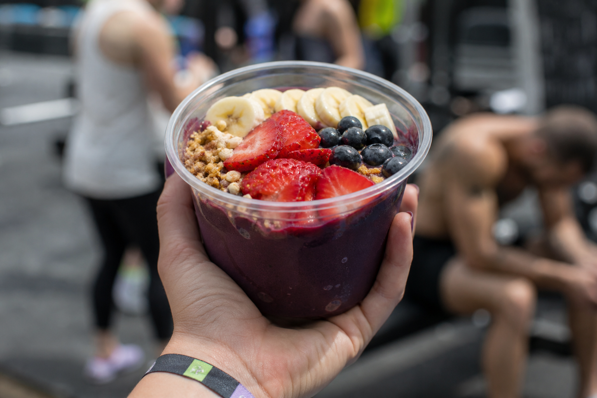
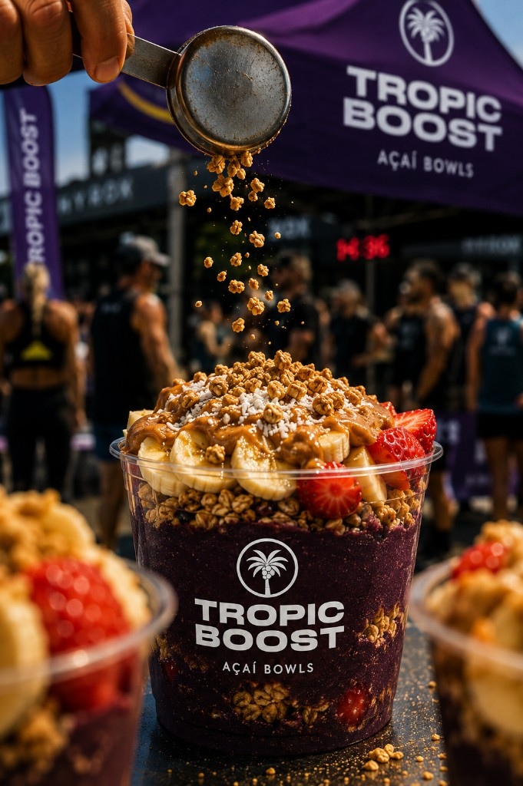
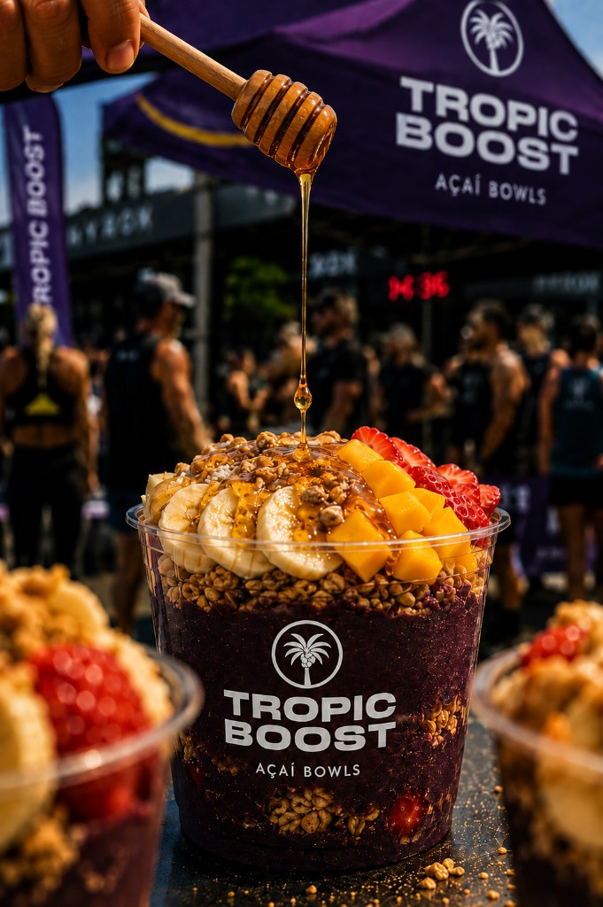

La Dulcecita
Açaí con granola, fresa, arándanos, chips de chocolate y crema de frutos secos. El boost más goloso.

Push, Recover, Enjoy
Bowls de açaí preparados al momento: recovery food y alimentación saludable para Hyrox, CrossFit, hybrid y carreras.
Nutrición deportiva
Tropic Boost lleva alimentación deportiva y bowls de açaí a competiciones y eventos. Montamos un stand de açaí con superalimentos y fruta congelada, pensado para recuperación post entrenamiento y rendimiento. Ideal como catering deportivo en Madrid, Barcelona, Valencia, Málaga, Sevilla y toda España.
ContactarPuesto de comida saludable en meta, paddock o zona de recovery — nutrición para eventos deportivos sin salir de la prueba.
El mejor açaí fitness: bowls saludables, snacks y energía natural para recuperación muscular.
Pre workout food y post workout meal con proteína natural y comida rica en nutrientes.
Açaí bowls
Açaí deportivo y bowls saludables: pre workout, recovery y energía natural con superfoods.
Açaí con granola, fresa, arándanos, chips de chocolate y crema de frutos secos. El boost más goloso.

Açaí con granola, plátano, fresa, coco y crema. Dulce, crujiente y muy apetecible.

Açaí con granola, plátano, fresa, piña y crema de pistacho. Cremoso, tropical y con un toque gourmet.

Açaí con granola, plátano, fresa, piña y miel. Toque tropical fresco para cargar energía.
Catering deportivo
Nutrición para eventos deportivos en Hyrox, CrossFit, hybrid / híbrido y carreras. Catering saludable y recovery food al momento.
Contactar
Eventos y competición
Alimentación en competiciones: nutrición Hyrox, CrossFit, running, ciclismo y trail. Açaí en eventos sin salir de la zona de prueba.

Comida para Hyrox y recovery entre estaciones

Comida para CrossFit y post-WOD fuel

Alimentación deportiva entre bloques de carrera

Comida para runners, ciclistas y triatletas en meta
Contrata catering deportivo o stand de açaí para tu evento en Madrid, Barcelona, Valencia, Málaga, Sevilla y más.
info.tropicboost@gmail.com